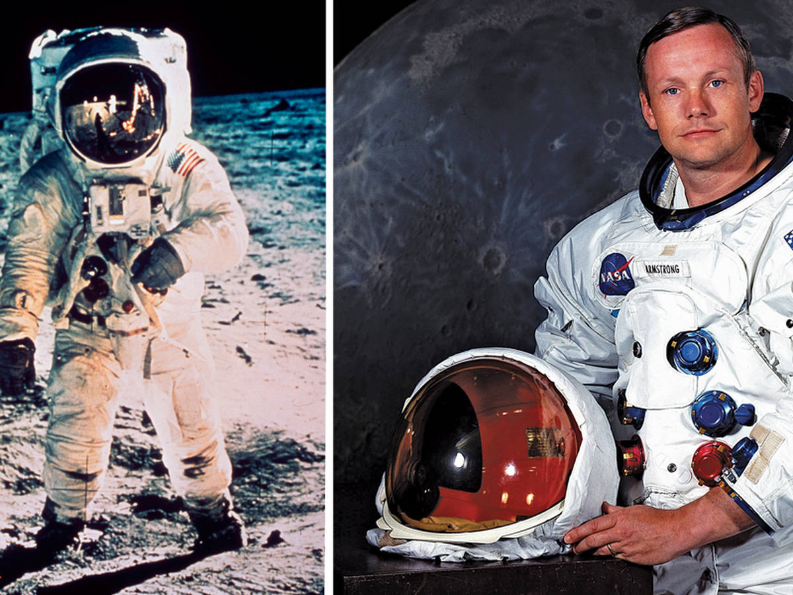

Un astronauta es una persona capacitada para viajar al espacio. Su trabajo incluye operar naves espaciales, realizar experimentos científicos y explorar el entorno espacial.
Para convertirse en astronauta se necesita tener una excelente condición física, estudios universitarios en ciencia o ingeniería y experiencia profesional. También se requieren habilidades como trabajo en equipo, comunicación y toma de decisiones bajo presión.
El entrenamiento incluye:
El traje espacial proporciona oxígeno, regula la temperatura y protege contra la radiación. Además, permite moverse y trabajar fuera de la nave. Su diseño es complejo, con múltiples capas y sistemas de soporte vital.
- Apolo 11 (1969): Primera misión tripulada a la Luna. - Estación Espacial Internacional (EEI): Laboratorio espacial donde astronautas viven durante meses. - Programa Artemis: Futuras misiones que planean volver a la Luna y luego ir a Marte.
Uno de los más conocidos fue Neil Armstrong, el primer ser humano en pisar la Luna.